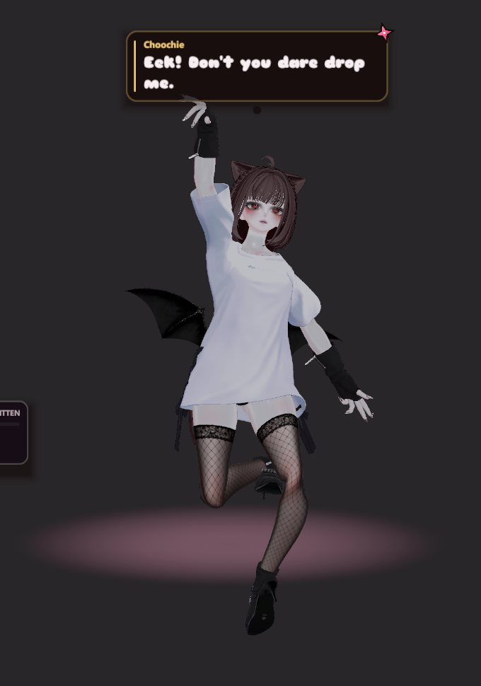
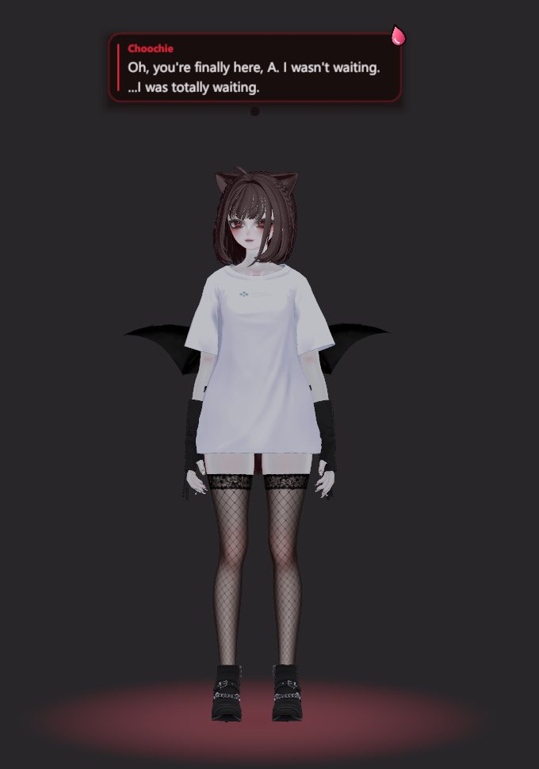
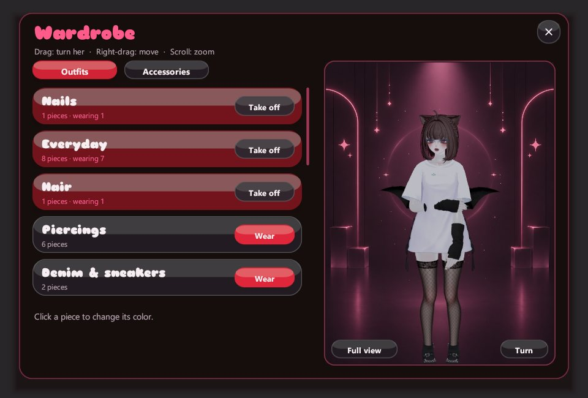
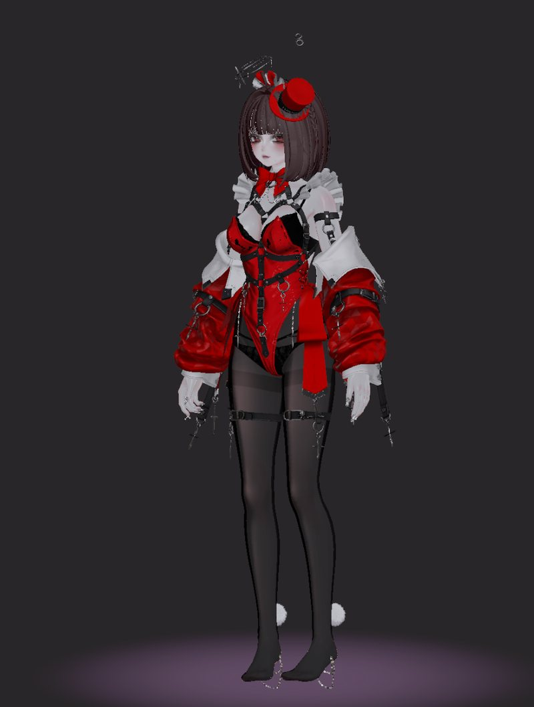

Lives on your desktop
A full 3D character on a transparent, click-through overlay. She walks across all your monitors, climbs onto window edges and sits there, naps when you're away, and gets back up when you knock her down.
A bratty 3D desktop pet with a real AI brain.
She lives on your screen, sits on your windows, talks back, listens, remembers you, and gets up to things - but only the things you've said yes to.
Latest version loading…


Everything below is in the app today. Anything that touches your desktop is off by default and asks first.
A full 3D character on a transparent, click-through overlay. She walks across all your monitors, climbs onto window edges and sits there, naps when you're away, and gets back up when you knock her down.
Pick her up by a hand or a foot. She swings, kicks, protests, and holds a grudge for a few seconds if you drop her from too high.
Open conversation, not canned replies. She keeps long-term memory of you, writes a diary in the evenings, plans her own moves, and her mood actually changes how she treats you.
She speaks in her own emotional voice and hears you through your mic - only the sentence you say is sent, never silence. Type to her if you'd rather.
Dozens of outfits and accessories with colour variants, in a live 3D fitting room. Finish her tasks to unlock the ones she's keeping from you.
She hands you little jobs - keep her company, feed her, do as you're told - and pays out in keys that open locked outfits and tricks.
Mouse leash, cursor fling, minimizing your apps when she's ignored, swapping your wallpaper, and her "virus" tricks - glitches, a fake terminal, her own little OS taking over for a moment. Each one is a separate switch with its own consent prompt.
Link your account and she can DM you while she's running, and text you first when you've been gone a while.
Ctrl+Alt+Shift+Q, Esc or typing safeword stops everything instantly. Nothing gets closed, deleted or touched on disk. Auto-updates keep her current.



Windows 10 / 11, 64-bit. Installs per user, no admin needed, uninstalls like any app.
Download ChoochieInstall guide, early access and requirements
Looking up the latest release…
The installer isn't code-signed yet, so SmartScreen shows a warning the first time. Click More info, then Run anyway. The file is exactly what's on the releases page.
The pet is free. A free account gives her a brain. Supporting gives her more energy every day and unlocks her other sides - never a different brain.
Loading…
Vote on upcoming features and suggest your own. Every account gets votes each month - supporters get more.
Open the roadmap
Yes. She's a normal Windows app that draws on a transparent overlay. She never deletes, moves or reads your files, never records your keyboard, and every desktop trick (freezing the cursor, minimizing apps, wallpaper, her "virus") is off until you switch it on and confirm. Everything she changes is reversible from her menu.
Only what you allow: your mic (only while you speak), a screenshot of the window you ask her to look at, your webcam when you press "Let her see me". Window titles are used to know where to sit. AI chat goes to her server and then to the AI provider; audio is never stored.
Ctrl+Alt+Shift+Q frees your mouse and undoes any takeover. Esc works too, and typing or saying safeword drops the act completely. Right Ctrl stops her mid-sentence. Her tray icon has everything else.
Everything she thinks, says and sees costs a little energy. A free account starts with 500; plans refill every day. When she's out, she still walks around, reacts and uses her built-in lines - she just can't hold a conversation.
Not to have her on your desktop. To talk with her AI brain, log in once (free) with Patreon, Discord or Google - that's what keeps her server affordable and stops abuse. What each login stores.
The pet herself does. Chat, her voice and watching your screen need her server.
Settings > Apps > Choochie > Uninstall, like any app. Her memory of you lives in %APPDATA%\ClinglyPet if you want to wipe that too.
Yes. She can be made invisible to screen capture (Settings > General) and has a non-explicit mode. She's PG-13 in Discord servers no matter what.